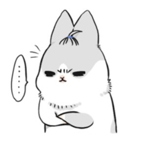
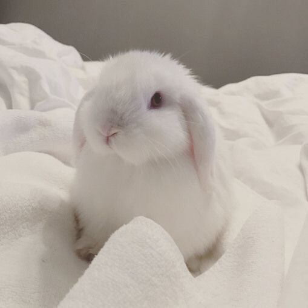
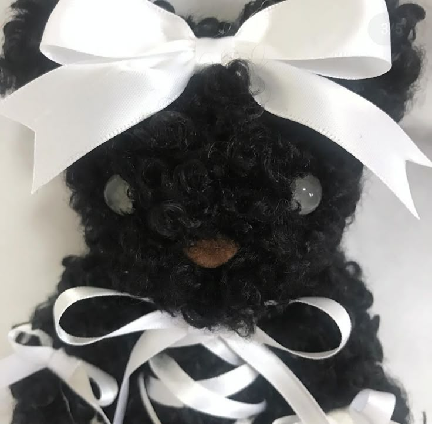
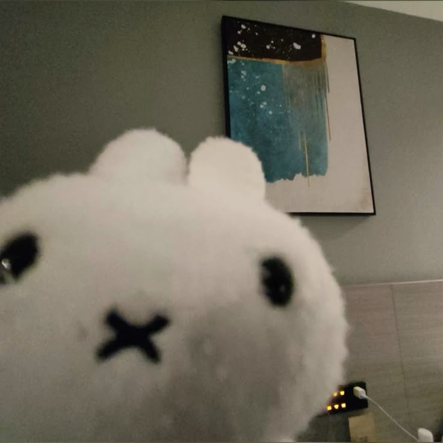

| 中文姓名 | 邱鈺婷 | 英文姓名 | Tinya |     |
|---|
家庭背景：爸爸在洛克西德馬丁美商公司上班，媽媽是家管，另外家中還有一位妹妹，從小爸爸和媽媽便教導我們不可以說謊、勇敢面對挫折和自己的錯誤，做每一件事都要全力以赴、盡力而為，並且家中的大家感情都很好，因此我是一個溫暖，並且懂得去關心周圍的人事物的人，另外也讓我是心思細膩且容易感知到周圍變化的人。家中的教育方式偏向美式，思想較開放、民主，在決定一件事情爸爸和媽媽都會與我們溝通，因此在解決一件事情時，我也懂得好好溝通，由於爸爸的英文能力較好，他希望可以培養自己的孩子有好的英文能力，而我是家中長女，因此父母對我的要求又比較嚴格一些，在幼稚園之前就被教導英文，而我對英文也產生了極大的熱愛，並且也能得心應手。
我的特質：我是一個安靜且不太喜歡說話的人，這也造成了我的社交有非常嚴重的問題，有時候也會很活潑，對於自己喜歡的人事物會很熱情，也會努力實現，像是擺脫束縛，但也常常在過程中很粗心，造成無法挽回的結果。
我的能力：我擁有較強的語文能力，尤其是在英文方面，從小因為爸爸的緣故而開始培養，年紀很小就開始學習英文，並且家裡也使偏西方的教育方式，另外，我在做事方面效率很好，也肯努力，都能按時完成任務，並且有好奇心，會去探討有興趣的事物，但也經常缺乏勇氣，會害怕失敗而不敢向前一步。
求學過程：從小就被培養英文能力，並不排斥，並且也產生了極大的興趣，幼稚園到補習班時期一直都是班上的第一名，但是也沒有向外的發展，就只是不斷地增進培養自己的英文能力，直到了國小，我有機會上台唸英文繪本，學校的英文老師這才發現我的英文能力，至此之後指導老師便帶著我，讓我代表學校參加大大小小的比賽，也都得到了很好的成績。 後來到了國中發生了轉變，因為媽媽的關係我喜歡上了醫學方面的事物，我愛上「人體解剖實驗」，媽媽總喜歡觀賞有關推理的電影，而我也非常喜歡，甚至是對於法醫這項工作非常迷戀，我也打算朝醫科走去，所以這個階段希望好好讀書走上理科的路，但是這條路對我而言是非常的艱難，甚至能用不可能來說，因為我的數理方面十分弱。到了高中，二年級曾經想過要放棄，因為數理方面的成績實在不理想，但是參加完醫學營之後，我便還是不打算放棄，我非常喜歡，並且我也想要放手一搏試試看，因此我毅然決然地走上了自然組，結果這也導致這幾個學期過得非常痛苦，另外也因為自己的社交障礙和恐慌，在班上和同學的相處並不是太好，焦慮、恐懼，甚至是免疫力下降，但是我也告訴自己一定要咬著牙撐過，另外我也認知到數理並不是我的強項。最後我選擇了我有興趣並且最擅長的外語能力。
2020 高中現代醫學營
超級英雄物理營
109-3-3 達文西微笑計畫
全民英檢 (中級複試:口說80分、寫作90分)
多益英文測驗 (675分)
109學年學生英文演講比賽 南區決賽:並未得獎
校內英文演講比賽:第三名
校內英文單字比賽:第二名
校內英文演講比賽:第二名
嘉義縣太陽館當解說員
Draco Malfoy：This is Crabe, Goyle and Alani. And I'm Malfoy. Draco Malfoy.
I totally cannot stop chuckling. The boy with red hair is snickering. I think Draco is furious about this. His face turns red. He just holds my hand and looks at me. He doesn't want me to laugh at him, so l stop my behavior.
Draco Malfoy：Think my name is funny, do you? No need to ask yours. Red hair and a hand-me-down robe. You must be a Weasley.
Alani (me)：Won't it be a problem you say that to......a Weasley?
I whisper by Draco's ear. Draco close to my ear and said something to me.
Draco：I'm Malfoy. There is nothing to be afraid of. And...... I can protect you.
Alani (me)：I don't need your protection. Draco. I think I need to protect you. Don't you remember that when we only six years old......
Draco：Stop it!
I laugh at him without saying anything. He pats my head tenderly and tell me to concentrate on the Start-of-Term Feast.
Today, Draco and I become Slytherin students in Hogwarts. I think there will be lots of interesting things in the future. And Draco and I need to face many obstacles together.
p.s. I really love the moment with Draco. Always happy.
並沒有任何人的迷惑和誘惑，她從來都不是被強迫的，她不過是犯下所有罪的最初，她並不渴望得到原諒，她只請求那個人別再將自己推開。
女孩無辜地抬眸看著那雙紫色眼眸，她試探性地接近夏以晝手上的果子，她沒有閃躲他視線下的誘惑，她的眼神熾熱，夏以晝並沒有預期她的反應，他向後縮了一些。
「你拒絕。」女孩帶著哭腔地說道。
夏以晝看著她的反應先是一愣，他笑了笑並哄著說道:「沒有。」
女孩嬌小的身軀向他傾了一點，她把夏以晝一點一點地往後逼，夏以晝低頭看著她挑了挑眉，他的雙手為了鉗住女孩的腰防止她再往前，果子就這樣掉在地上，他俯身直視著她。
「你的蘋果掉了。」女孩盯著掉在地上的果子輕輕說道。
「誰的問題？」夏以晝笑了出來，他完全拿她沒有辦法。
女孩聞言，她調皮地笑著，她自始自終都知道夏以晝的弱點，那便是自己，而她便會肆無忌憚地掐住這樣的弱點，將他永遠鎖在自己身邊，然而她也會裝傻、裝作若無其事的樣子，喊著哥哥將他禁錮在自己的牢籠中，她也知道夏以晝絲毫沒有想要掙脫鍊條，而她的雙手也會永遠緊抓著那條鎖鍊。
「你還想吃蘋果嗎？我可以幫你洗。」女孩問道。
夏以晝搖了搖頭。
「但我還想。」女孩直言。
她嬌小的身軀整個壓在他身上，她用著食指輕輕地刮著夏以晝的喉結，她直勾勾地看著他的雙眼，夏以晝瞪大著雙眼，雙手禁錮在女孩的腰上又更緊一些，他倒抽了一口氣，他馬上別開了那雙熾熱的雙眼，粉色的暈就這樣爬上了他的耳朵。
「夏以晝別告訴我你又感冒。」女孩輕笑著。
夏以晝咬著牙，他怎麼可能忘記他說過的話，女孩看著他絲毫沒有作為，她皺著眉，她生氣地咬著他的喉結，她沒有咬得很大力，但是夏以晝還是被嚇到，他的其中一隻手扶著她的頭，輕輕地把她扳開。
「我怎麼不知道妳喜歡吃蘋果？」
夏以晝將女孩的嬌小的身軀放到自己腿上，他順勢往後靠著椅背，女孩也毫不避諱地壓在他身上，她的手臂環著他的脖子，夏以晝克制地用手抓著女孩的腰，他覺得理智快衝破極限。
女孩輕輕地啄了一下他的嘴角。
「我很喜歡很喜歡蘋果，哥哥不喜歡嗎？」女孩故意地說道。
什麼所謂地亞當與夏娃，根本不存在，夏以晝只覺得女孩才是蛇，他自己便像是夏娃一步步被誘進禁地，但同時他也覺得自己是有罪的，而他也甘願就帶著如此的罪孽一步步墮落，反正只要有她就好。
夏以晝將女孩的腰重重地往下壓，她咽嗚了一聲。
「不准叫哥哥。」
「哥哥… 」女孩後面的話被他用著吻狠狠地模糊住，她咽嗚著試圖發出聲音，只覺得像是快要溺水，夏以晝似乎並沒有要給她喘息的空間，等他終於離開女孩的唇齒間，女孩正喘著氣，臉蛋染上一層粉色的暈，眼尾是好看的嫣紅色的，他看著她這副模樣忍不住想欺負她，他把臉埋進女孩的頸窩貪婪地嗅著屬於她的氣息，不，此時的夏以晝覺得女孩的一切和所有都他的。
「叫我的名字。」
「不要。」女孩回擊著，但夏以晝也沒有讓步，他咬著她的脖子故意留下自己的印記。
「夏以晝。」
女孩這才輕輕地喚著，而這聲輕喚彷彿掌握那條鎖鍊的已經換人，夏以晝像是逃脫束縛般，他的手開始肆無忌憚地在女孩的身上游移著，女孩只能一聲聲地咽嗚著服軟，她身上真的一點力氣都沒有，她知道夏以晝又用了自己的evol，她乾脆把臉蛋埋進他的頸窩任由他擺布。
蛇引誘夏娃吃禁果，夏娃有罪，但是蛇罪孽更深，但似乎他們都甘願墮落在那樣的歡愉中，他們被彼此束縛著卻永遠無法從彼此身上得到滿足，他們只想要更多更多。